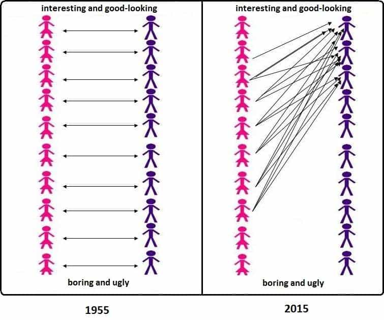
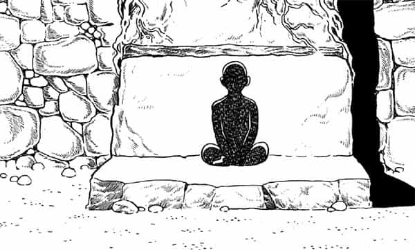

André is a young European who left his decaying country in 2012 for greener pastures. He enjoys exploring subterranean places, reading about a host of interconnected topics, and yearns for Tradition.


A good thing about not being a conservative lies in having a wider range of possibilities and references available. Over the years, the same red pill I got by reading someone like Kevin MacDonald led me to explore what, as a teenager, I would have probably rejected as hippie or new-agey: Hinduism.
Beyond the strange imagery and snake oil open-your-chakras sellers that often pop in mind when we think about it, this spiritual form is considered a reference by first-rate critics of modernity. The Hindu concept of dharma may be a way to restore some balance in a West that lost all sense of a general equilibrium, and, as I could confess, roots that trace much beyond the official history of both Christianity and modern secularism seem to hold something we lost the sight of long ago.
It is with this state of mind that I started reading a venerable legal code, the Law of Manu. It attracted me because it entails detailed answers to the timeless question of how society should be organized or regulated—remember that the lack of regulation of female choices, even coupled with an excess of regulation of men’s action, caused the oligopoly of some high-value guys over most decent value women and the disgruntling of deserving but despised millenials—with no qualms for this or that group’s feelings.

Initially, I found there some interesting material about women and relations between the sexes. Then, enough “else” content stroke me as still relevant enough for gleaning valuable lessons from it. Some of this “else” was published last week, and here is the rest.
Not to beat around the bush: a highly interesting and, from a modern point of view, potentially alienating feature of the Hindu society is that it has castes. Today, we mostly think of castes as a primitive and stiffer equivalent of social classes, with pampered royalty looming over meritorious but lower-caste trapped individuals. This is, actually, a caricature of castes.
Whereas social classes are mostly measured by one’s capital—even being an establishment Leftist implies “cultural” and relational capital—no matter what or who one “really” is, castes in the original sense are primarily inner and vocational, and only secondarily social. Some Westerners, seeing that contemporary India has thousands of sub-castes, often conclude that the whole system is an elaborate construction, not thinking that this diversity may come from repeated interbreeding between principles that were much purer at the beginning.
But, it might be said, what if someone whose vocation is to deal with letters spawns in a family of illiterate craftsmen, or if someone with a natural sense of business opportunities was born in a family of soldiers? More often than not, castes follow the lines of heredity, but this is so because the same produces the same, so that spontaneous aims and proclivities meet with an appropriate environment. Problem appear when castes mix up, or when higher castes lose the sight of their own reasons to be, show hubris, split up… and degenerate or crumble.
Just as men and women are different, so are, say, a Brahmin—priest, chief performer of rites, in charge of the sacred knowledge—and a Vaishya—merchant, free farmer and craftsman. Each have different affinities, capacities, responsibilities, and their roles are not to be equated. If the idea that “a parasite turning a prayer wheel”, as a hardcore secularist once said on TV, ought to be considered beyond a guy who makes millions, seems repulsive, consider that societies that dutifully followed the law of castes, without letting them interbreed or degenerate too easily, lasted for thousands of years, while our “equalitarian” and “progressive” modern ones have always been in crisis.
It seems like, over the centuries, most European Brahmins (I am talking here of the inner caste rather than the social one) disappeared, which might be the result of priestly celibacy. The typically Western action-oriented mindset likely stems from a prevalence of people from the two intermediary castes, Kshatriya—warrior, administrator, royalty—and Vaishya. Likewise, it seems a safe bet to consider that Return of Kings is mostly read by individuals belonging to intermediary castes, as Brahmins are negligible in quantity, and the Shudra or fourth caste, have neither the strive for autonomy or dignity nor the patience to meditate the red pill for years.
So, to confront the elephant in the room: let’s say you have no inclination for military career and glory and rather recognize yourself as a member of the third caste—le tiers état. It may feel revolting to think about handling the power to two other castes beneath and think you cannot join them, as one could not change one’s inner caste without turning into another person. Does it?
A Vaishya shall acquaint himself with the relative values of gems, pearls, coral, metals, threads, perfumes, and condiments. He should be knowledgeable about sowing seeds, the good and bad qualities of farmland, all the various ways of weighting and measuring, the desirable and undesirable properties of goods, the good and bad aspect of regions, the probable profit and loss of merchandise, and how best to raise farm animals. He should be well informed about the wages to be paid to servants, the different languages of people, the manner of storing goods, and the procedures of buying and selling. (9.329-33)
Add to this being a pater familias and this lets ample room for growing, personal improvement, knowing the market and trade like your pocket, and being worthy of respect. I would say it seems much better than being a cubicle monkey who rents his flat and attempts to please an overweight Anglobitch for both sex and salary.
Today, most members of the third caste are being exploited by a handful of them who take advantage of cheap labour and market volatility. Definitely, most of those who belong here would be better off in a fair caste system, even reasoning from pure personal interest.
Also, I have noticed repeatedly that individuals who seem to inwardly belong to the Vaishya caste may deny the two upper ones, but are quite touchy if threatened to be reduced to the state of the fourth caste—the Shudra. A true Vaishya hates the idea of being turned into a prole, wholly dependent from a meager paycheck or State assistance, and robbed from the ability—should I say birthright?—to self-determination, which can happen when fourth caste apologists like Bolshevists want to destroy private property and deny their upper neighbours, but would not in a traditional world.
Even serfs or shudra, the fourth caste, had it better than now

Entertainment culture, self-complacency, addiction, propaganda and other factors accustom us to lose personal control. The blue pill is exactly that: having our behavior controlled by rules we are not aware of, believing in what the media tells us, and being complacent enough to develop addictions and get into debt.
Being red-pilled is about regaining awareness, not only of a hidden reality, but also of what intervenes between reality and us to curb our outlook and behavior—and about determining ourselves anew. Being able to life on half your wage, free of debt, and to take rejections from girls or insults from Leftists without getting affected are demonstrations of self-mastery.
The Law Code of Manu expects everyone, including the fourth caste, to develop self-mastery, to the point of “clearing” one’s mind of negative thoughts and emotions at particular moments. Several sections are devoted to commanding one’s mind, body and speech, and the Code acknowledges who reaches complete self-mastery as deserving bliss and the highest salvation.
This makes much sense. If everyone strives minimally to develop virtues and be polite, society as a whole becomes much more harmonious than if everyone thinks of muh rights and muh opportunities. Also, if the first castes are expected to be almost exemplary, the other ones do not benefit from a culture of victimhood or “I’m underprivileged so I can do this and that as I want”, and this is especially important to prevent abuses.
Abstention from injuring, truthfulness, refraining from anger, purification, and mastering the organs—this, Manu has declared, is the gist of the Law for the four classes. (10.63)
Vaishya individuals resent an adverse economy where Big Corp tries to reduce them to low-wage workers, and men resent being turned into chumps or clowns who depend from a girl’s caprice for a bang. The modern pretense to make everyone potentially independent, or with an equal right to independence, turned natural-born independents into dependents and natural-born dependents into alleged independents.
In case of adversity, women can work (see for example 7.125) in specific employments and Shudra can live from craftsmanship (10.99-100). Otherwise, in easier or more regular times, one should live according to his own dharma—thus accepting to dependency which goes with said dharma. Note that higher castes do not automatically imply more independence at all levels: Brahmins have a right to beg for food and shelter, which was not despised, but are forbidden from lending money on interest (10.117) or from selling some kinds of food, whereas the Vaishya can without prejudice. In general, “it is far better to carry out one’s own Law imperfectly than that of someone else perfectly” (10.97).
After all, much of the modern social chaos can be explained by a failure to do so: wealthy Vaishya pretending to political power fund the worst Leftist initiatives, Shudra enjoying a bit of authority turn into petty power-tripping chiefs, “emancipated” women show hungry of beta orbiters and management power. The degeneracy or hubris of late upper caste individuals is no excuse for handling their responsibilities to individuals of a lower caste.
Common sense may lie in numbers, but knowledge on the highest sense does not, and analogically, convention is to be found on the social marketplace, but the Law is not:
[T]housands of men who fail to follow the observances, who are unacquainted with the Veda [Scriptures], and who merely use their caste to earn a living, come together, and do not constitute a legal assembly. Fools enveloped by Darkness [cannot] declare something as the Law when they are ignorant of it… (12.114-5)
The classic Athens, so often quoted as a model of democracy, was ran by a confederation of masculine, experienced free men, who shared a collective identity and sense of self-determination that can hardly be find in millions of media-addicted, diversion-seeking contemporary voters. Athenians also recognized the difference between Law—dikē, akin to Hindu dharma—and the legal or conventional.
Note that this one is not a justification for absolute power or greedy, pompous managerialism hidden under a veneer of “progress” or “management sciences”: the Law Code specifically warns against grabbing positions one is not qualified to assume or forgetting one’s vocation.
Also, the modern mandatory school policy that forces any child into a take-it-all System is groundless: a teacher “must never impart instruction to anyone who has not requested it or who has requested it in an improper way.” (2.110) Children or apprentices ought to value and want for what they have to learn, not getting their heads filled up, and perhaps some would not be worst off if they remained far from written texts.
Among the prolific Hindu literature, the law treatises are perhaps the most accessible due to their practical orientation. Earlier than most others, more focused than these on the essential, the Law Code of Manu is quite readable although precise. It provides a good way to perceive what a traditional, cosmos-wise—if I can say so—and still highly civilized society looks like.
Furthermore, if you take a glance at the twentieth century Indian “nationalist” literature, you may be surprised to see a total lack of references to the castes system, as if nationalism and the “rights of Indian people” had been but a pretext to deny the landmarks of a time immemorial.
Perhaps the way out of Leftism must pass at one moment by the severe figure of the ascetic.
Read Next: 5 Essential Life Lessons From The Hindu Law Code Of Manu